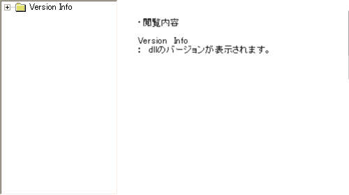

デフォルトでTowerⅡをインストールすると"C:\Program Files\OPeNBooK9003\TheTowerII"に格納されます。そのフォルダの中には2つのフォルダと9個のファイルがあります。
| 名前 | 拡張子 | サイズ | アイコン |
| T2 | .exe | 624KB | |
| T2Icons | .dll | 162KB | |
| T2DLL | .dll | 807KB | |
| T2SSound | .dll | 106KB | |
| T2 | .dat | 301KB | |
| t2s | .dat | 144KB | |
| T2Pref | .dat | 28B | |
| Uninst | isu | 58.0KB | |
| お読みください | .txt | 1.17KB | |
| Movie | フォルダ | - | |
| Plugin | フォルダ | - |
TowerⅡの実行ファイルです。32ビットアプリケーションなのでリソースエディタでの閲覧や逆アセンブラが行えます。以下はリソースエディタ「Resource Hacker」での閲覧の様子です。
TowerⅡのアイコンが詰まったdllファイルです。DLLなのでリソースエディタでの閲覧が行えます。以下はリソースエディタ「Resource Hacker」での閲覧の様子です。
TowerⅡの拡張DLLです。DLLなのでリソースエディタでの閲覧が行えます。以下はリソースエディタ「Resource Hacker」での閲覧の様子です。
TowerⅡのサウンドdllです。DLLなのでリソースエディタでの閲覧が行えます。以下はリソースエディタ「Resource Hacker」での閲覧の様子です。
TowerⅡの起動画面に登場するイメージ画像です。画像は暗号化されていないので、拡張子を.jpgに変更することにより画像を閲覧することができるようになります。
TowerⅡの起動選択画面に登場するイメージ画像です。画像は暗号化されていないので、拡張子を.jpgに変更することにより画像を閲覧することができるようになります。
TowerⅡのシリアルナンバーを格納するファイルです。このファイルをバイナリエディタで開くと初回起動時に入力したシリアルナンバーが記載されています。 下記のイメージのAという場所にシリアルナンバーが記載されています。シリアルナンバーは16桁なのでバイナリでいうと000000を占拠しています。またTowerⅡではこのファイルの有無と中に記載されているシリアルナンバーによって正規ユーザーかどうかを確認しています。
TowerⅡをアンインストールするときに必要なファイルです。
TowerⅡののReadMeファイルです。DirectXについてとマニュアルの訂正について書かれています。
TowerⅡのムービーを保存しておくフォルダです。
TowerⅡのPluginを保存しておくフォルダです。TowerKITによって下にフォルダを作ることがあります。